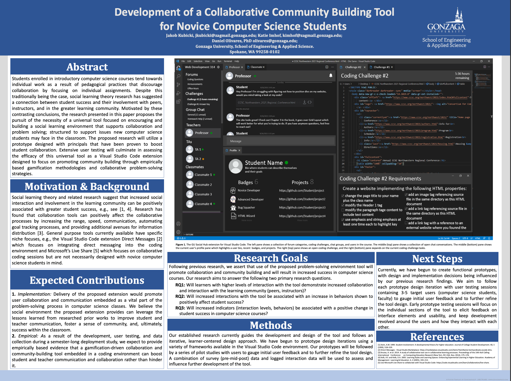

Research
About
-
Developing an extension for Visual Studio Code
-
Researching the positive impact this extension will have on computer science students
-
Presented at the Spokane Intercollegiate Research Conference
-
Created websites focusing on the user interface functionality
-
Collaborating with 1 other coworker to create an extension for Visual Studio Code
-
Learning HTML, JavaScript and CSS to develop the extension
-
Presenting at the Consortium for Computing Sciences in Colleges in November 2022
My coworker and I presenting at the Spokane Intercollegiate Research Conference

Our most recent poster that we presented at the Fall 2022 Parent's Weekend at Gonzaga University
Next Steps: Usability Testing
-
To perform extensive user testing studies to evaluate the efficacy and capability of the universal tool
-
Test on three to five target users (computer science students or faculty), to gain feedback
-
Refine the prototype design